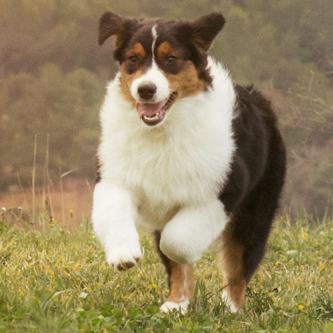

COMO CUIDAR A TU MASCOTA
| |
|
|  | El momento ha llegado. Tu cachorro acaba de llegar a su nuevo hogar. Quieres que su vida sea increíble desde el primer día, y aquí estamos para ayudarte a que lo consigas. Los cachorros adoran olisquear todo lo que les rodea. Con unos simples consejos, puedes controlar esta inquietud: -Mantén a tu cachorro en un área limitada de tu casa, alejándolo de espacios que puedan suponer algún riesgo para &eacuet;l. -Evita dejar a su alcance medicamentos o productos que contengan agentes químicos. -Asegúrate de que no tiene acceso a cables o enchufes. -Nunca dejes que acceda a alimentos como el chocolate, ya que su ingestión es tóxica para los perros. |